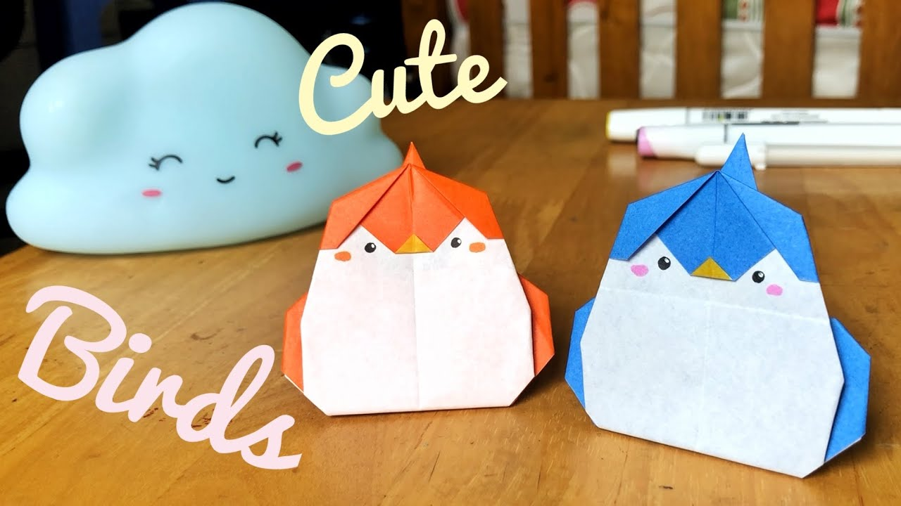
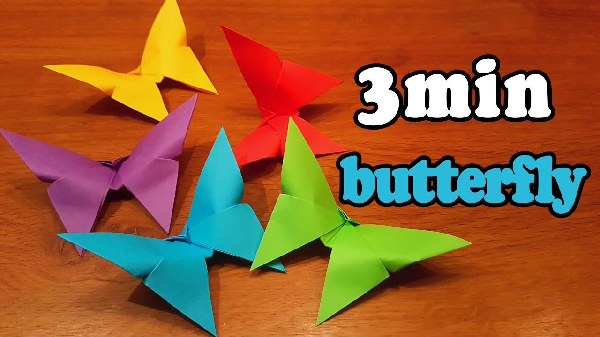
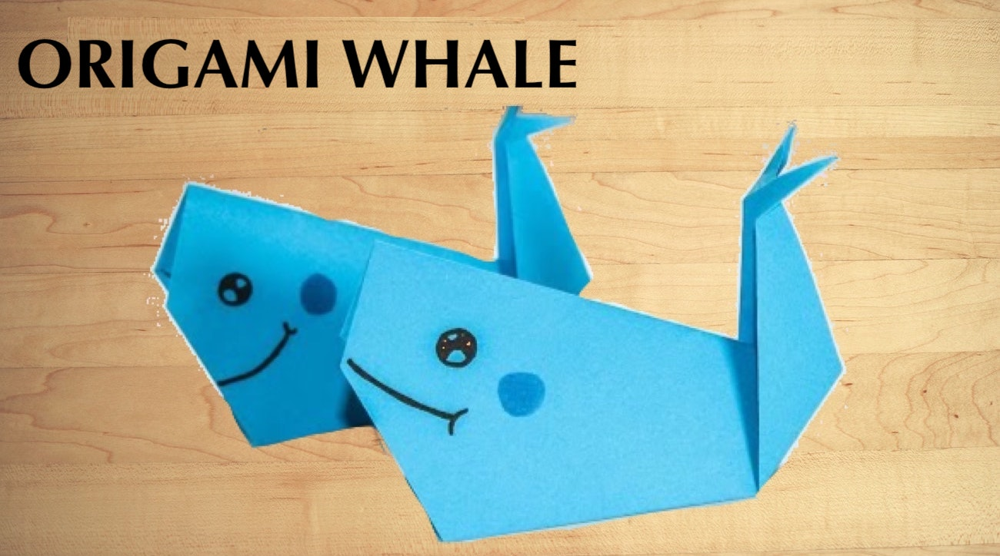
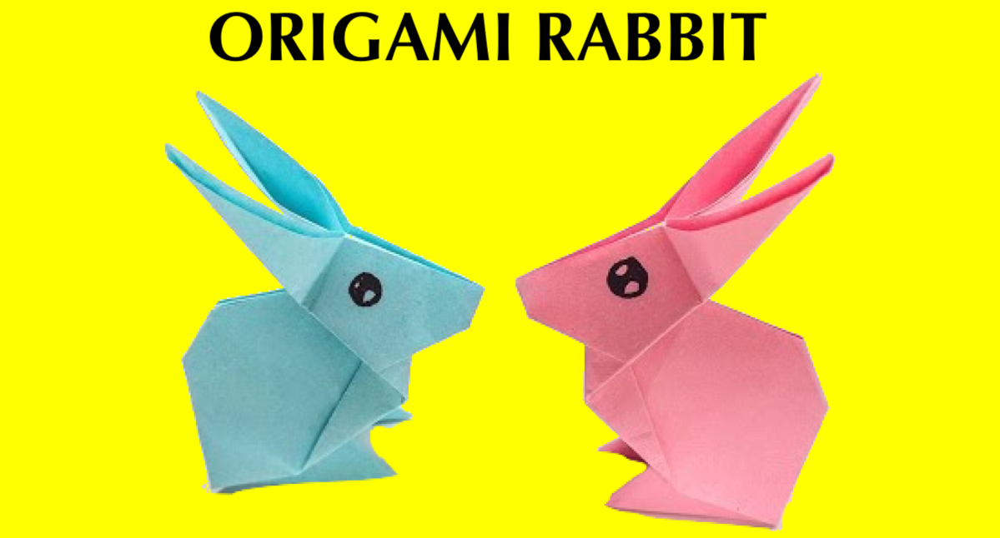

Origami Designs
About Us
Follow Us
Here are some origami designs
1)How to make Birds

Interesting facts about birds!
- There are around 10000 different species of birds worldwide.
- Some bird species are intelligent enough to create and use tools.
- Many birds, such as starlings, sing notes too high for humans to hear.
2)How to make Butterflies

Interesting facts about butterflies!
- Butterflies taste with their feet.
- Butterflies cannot fly if their body temperature is less than 86°F.
- Butterflies have four wings, not two as you may think.
3)How to make a Whale

Interesting facts about whales!
- Humpback whales don't eat for most of the year.
- Whale "vomit" is used in perfumes.
- Whales don't sleep.
- Humpback whales sing complex songs.
4)How to make a Bunny

Interesting facts about rabbits!
- Rabbits eat their own poop😂
- Rabbits cannot vomit!
- The teeth of a rabbit are very strong and they never stop growing.
- A rabbit sweats only from its pad on the feet!
5)How to make a rose
Interesting facts about roses!
- You can eat roses.
- The buds of the tiniest roses are the size of a grain of rice.
- The world's oldest living rose is believed to be 1,000 years old.